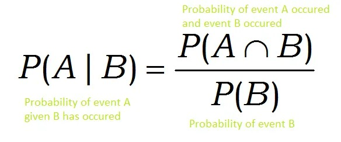
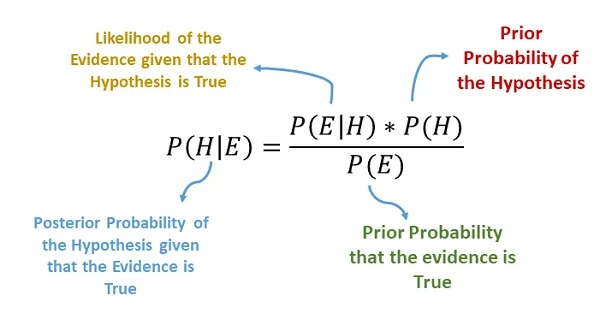
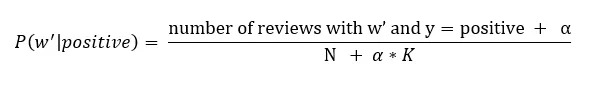
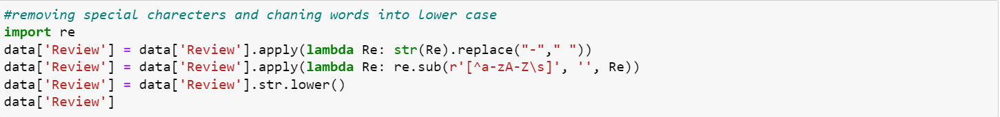
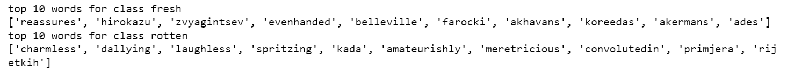
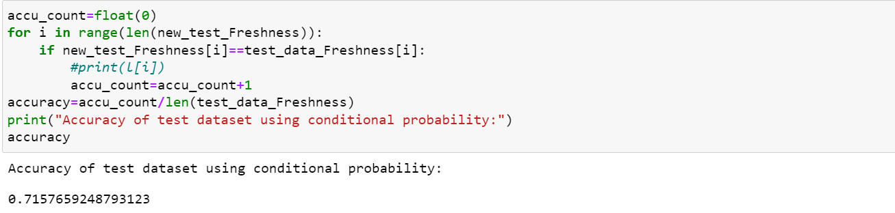
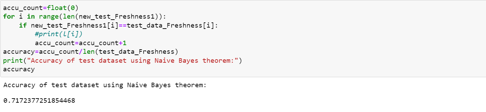

Introduction
Text classification using Naive bayes theorem with out using libraries related to Naive bayes theorem.
We used dataset from kaggle (Rotten Tomatoes Reviews), Our Aim is to build a Naive Base Classifier from scratch and to learn Naive Base Classifier.
Conditional Probability:
The possibility of an event happening given that another event has already occurred is known as a conditional probability.
conditional probability

What Is the Naive Bayes Algorithm
It is a classification technique based on Bayes Theorem with the assumption of predictor independence. A Naive Bayes classifier, to put it simply, believes that the presence of one feature in a class has nothing to do with the presence of any other feature
Given a features vector X=(x1,x2,…,xn) and a class variable y, Bayes Theorem states that:

by conditional independence, we have:

Laplace Smoothing
Laplace smoothing is a smoothing method that handles the Naive Bayes issue of zero probability. Using Laplace smoothing, we can represent P(w’|positive) as
Here,
alpha represents the smoothing parameter
K represents the number of dimensions (features) in the data, and
N represents the number of reviews with y=positive
If we choose a value of alpha!=0 (not equal to 0), the probability will no longer be zero even if a word is not present in the training dataset.
Lemmatization
Lemmatization is the process of reducing a word to its base or dictionary form, known as a lemma. It involves analyzing the morphological structure of the word and its context to determine its base form.
The goal of lemmatization is to reduce a word to its root form, also called a lemma. For example, the verb "running" would be identified as "run."
Contribution:
removed special charecters and changed the dataset Review column into lower case
Here the dataset is divide into 3 parts, train data, dev data, test data

Laplace Smoothing: Initialized value of 0.000000000000000001 for calculation conditional probability while testing.
created a list pronouns, this list has the most common words like 'a','the','is'..., and deleted these words from vocabulary and then did prediction on test dataset, before deleting pronouns perfored prediction on dev data."
Derived Top 10 words that predicts each class
Accuracy using conditional probability on test dataset
Accuracy using Navie Base Classification on test dataset

Reference
[1] https://www.kaggle.com/code/ceocampo/movie-classification-of-rotten-tomatoes-reviews
[2] https://machinelearningmastery.com/naive-bayes-classifier-scratch-python/
[3] https://statisticsbyjim.com/probability/conditional-probability/
[4] https://medium.com/analytics-vidhya/na%C3%AFve-bayes-algorithm-5bf31e9032a2
[5] https://towardsdatascience.com/laplace-smoothing-in-na%C3%AFve-bayes-algorithm-9c237a8bdece